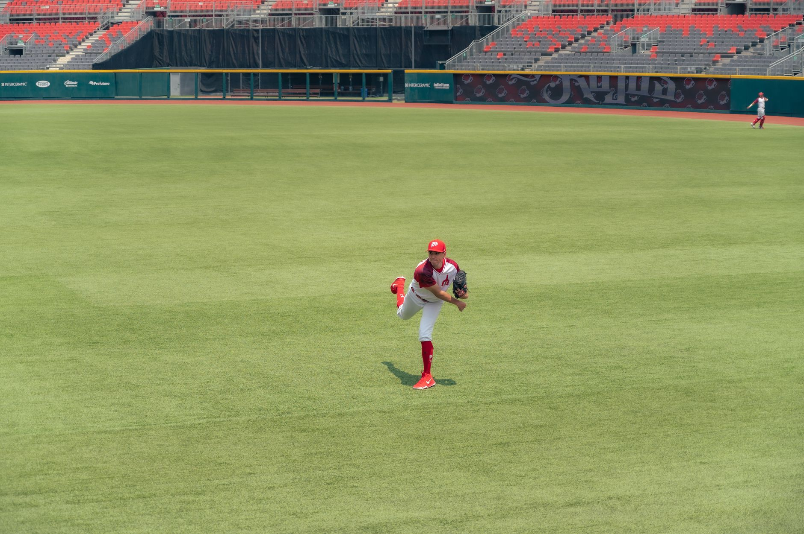

The weight of a championship drought
For baseball fans, the pursuit of a World Series title is more than just a game; it is a generational struggle. A drought occurs when a team fails to win the championship for many years, often spanning decades. These periods of waiting can shape the culture of a city, influence fan loyalty, and place immense pressure on front offices to make big-budget moves.
While some teams view a drought as a temporary setback, others see it as a systemic issue that requires a complete rebuild. The history of the sport is filled with legendary players who played their entire careers without ever hoisting the Commissioner's Trophy, making the eventual victory even sweeter for the supporters.
Analyzing the top contenders to break the streak
When looking at which team is most likely to end their drought next, analysts often look at roster depth, pitching stability, and recent postseason appearances. Some teams have managed to consistently make the playoffs but have hit a wall when facing the elite talent of the league's heavyweights.
The key factor for these teams is often the ability to balance a high payroll with sustainable player development. Relying solely on free agency is a risky strategy that often leads to short-term success followed by long-term decline.
The longest waits in modern baseball history
Some franchises have faced droughts that feel almost eternal. These teams represent the extreme end of the spectrum, where the last championship win occurred before many of the current fans were even born. These long stretches create a unique kind of desperation within the organization.
A championship drought is not just a statistic; it is a psychological weight that every player and fan carries into every single inning of every single game.
Breaking such a long streak requires more than just a good season. It requires a perfect alignment of veteran leadership, rookie emergence, and a bit of postseason luck that can turn a talented roster into a championship squad.
How roster construction impacts postseason success
Modern baseball has shifted toward a heavy emphasis on analytics and specialized roles. Today, a team's ability to end a drought often depends on their bullpen depth and their ability to exploit matchups through advanced data. This has changed how managers approach the high-stakes environment of October baseball.
Teams that focus too heavily on one aspect, such as home run hitters, often find themselves struggling when they encounter elite pitching in the postseason. A balanced approach remains the gold standard for teams attempting to end a decade-long wait for glory.
Looking ahead to the next era of champions
As we look toward the upcoming seasons, the landscape of Major League Baseball continues to evolve. The gap between the elite and the struggling is closing as small-market teams find innovative ways to compete with the giants of the league.
Whether it is a sudden surge of talent or a slow and steady build, the end of a drought is always one of the most dramatic storylines in sports. Every season brings a new set of hopefuls and a new chance for a forgotten franchise to reclaim its place in the history books.
If you want to see the incredible plays that define these historic runs, make sure to check out our guide on the Best MLB Postseason Moments: Top Highlights of the Series at https://dhyey.bond/blog/best-mlb-postseason-moments-top-highlights-of-the-series/ to relive the greatest triumphs in baseball history.
See Also
If you enjoyed this Baseball News article, check out Best MLB Postseason Moments: Top Highlights of the Series for more useful reading.